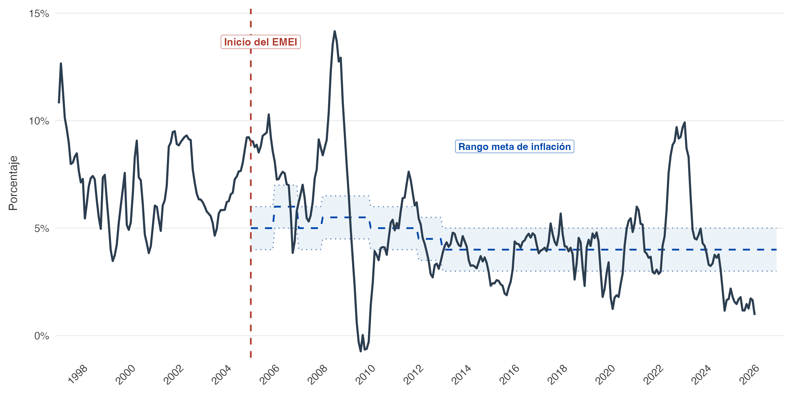
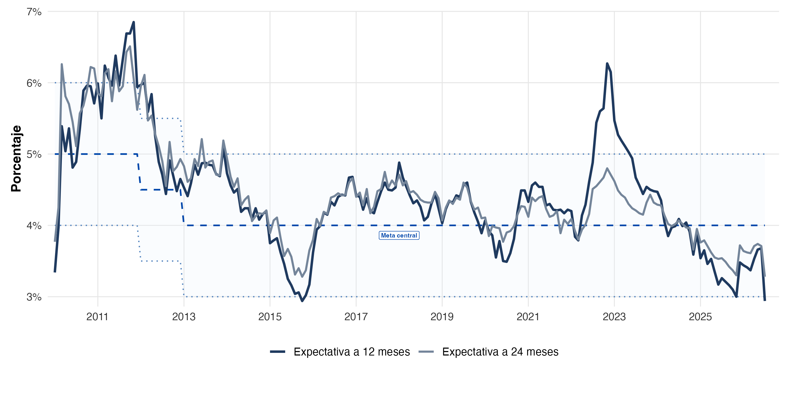

¿Cómo cambian los valores del proyecto? · Sesión 08
Maestría en Formulación y Evaluación de Proyectos
Una planta de alimentos aumenta sus ventas de Q3.0 a Q3.3 millones.
Sus insumos suben 15%. El banco revisa la tasa del préstamo.
¿Aprobarían la inversión con la misma evaluación financiera?
Producto de la sesión: una recomendación sustentada en el laboratorio Excel.
| Tramo | Minutos | Participación |
|---|---|---|
| Dinero y bancos | 30 | Clasificar y reconstruir un préstamo |
| Dinero, producción e inflación | 30 | Predicción y cálculo |
| Pausa | 10 | |
| Tasas, contratos y transmisión | 45 | Resolver y debatir |
| Laboratorio Excel | 45 | Cuatro experimentos |
| Puesta en común y cierre | 20 | Defender una decisión |
| Elemento | ¿Dinero, activo o instrumento de pago? |
|---|---|
| Billete de Q100 | |
| Depósito disponible en cuenta | |
| Tarjeta de débito | |
| Línea de crédito aprobada | |
| Terreno que podemos vender |
Billete y depósito transferible cumplen funciones monetarias. La tarjeta da acceso al depósito. La línea permite endeudarse. El terreno es un activo poco líquido.
Medio de intercambio
Pagar materias primas y cobrar ventas sin trueque.
Unidad de cuenta
Expresar precios, costos y contratos en una medida común.
Depósito de valor
Trasladar capacidad de compra al futuro.
Pregunta: si la inflación aumenta, ¿cuál función se deteriora primero para una caja ociosa?
Base monetaria: efectivo y reservas bancarias en el banco central.
Dinero de uso del público: efectivo y depósitos incluidos en el agregado que se analice.
La composición depende del agregado estadístico. Base monetaria y dinero amplio tienen alcances distintos.
Si transfiero Q5,000 de mi cuenta al proveedor, ¿aumenta el dinero total o cambia su tenedor?
En una transferencia entre depósitos, cambia el tenedor. No se crea dinero adicional por el pago.
Un banco concede Q100,000 a la planta y acredita su cuenta.
| Balance del banco | Cambio |
|---|---|
| Activo: préstamo por cobrar | +Q100,000 |
| Pasivo: depósito del cliente | +Q100,000 |
La planta obtiene un depósito y asume una deuda por el mismo principal.
No aumenta su patrimonio neto por recibir el préstamo.
La planta tiene un VAN positivo, pero poca caja para pagar cuotas. ¿Qué preguntaría el banco?
| Institución | Papel que interesa al proyecto |
|---|---|
| Junta Monetaria | Determina la política monetaria, cambiaria y crediticia |
| Banco de Guatemala | Ejecuta esa política y opera en el sistema monetario |
| Bancos comerciales | Otorgan crédito, administran depósitos y pagos |
| Superintendencia de Bancos | Supervisa entidades bajo su ámbito |
La tasa líder orienta las condiciones monetarias. El banco comercial cotiza el préstamo según sus condiciones y el riesgo del cliente.
Imaginemos una economía con 100 canastas y Q1,000 de gasto nominal.
El gasto aumenta a Q1,100.
Votación: ¿el precio sube necesariamente 10%?
Depende de la respuesta de la producción y de la velocidad de circulación. Si las canastas aumentan a 110, el precio promedio puede permanecer igual.
\[MV=PY\]
| Símbolo | Interpretación |
|---|---|
| \(M\) | Stock de dinero del agregado elegido |
| \(V\) | Velocidad de circulación respecto del producto |
| \(P\) | Nivel general de precios |
| \(Y\) | Producción real |
Como identidad, organiza el gasto nominal. Para explicar causalidad necesitamos supuestos sobre \(V\) y \(Y\).
Si la velocidad es relativamente estable y el producto real depende de factores reales en el largo plazo, un crecimiento monetario persistente por encima del producto presiona los precios.
\[\pi \approx g_M+g_V-g_Y\]
Precaución: es una aproximación. En el corto plazo cambian producción, demanda de dinero y velocidad.
En ambas, \(M\) aumenta 10% y \(Y\) aumenta 3%.
| Caso | Cambio de \(V\) | Inflación aproximada |
|---|---|---|
| A | 0% | ¿? |
| B | −5% | ¿? |
A: aproximadamente 7%. B: aproximadamente 2%.
Exacto: \(1+\pi=(1+g_M)(1+g_V)/(1+g_Y)\), que da 6.80% y 1.46%.
Inflación: aumento del nivel general de precios durante un período.
Desinflación: la inflación baja. Los precios pueden seguir aumentando.
Precio relativo: un producto se encarece frente a otros.
El IPC aumenta 4% y el empaque de la planta aumenta 12%. ¿Qué tasa usarían para proyectar el costo del empaque?
El supuesto específico del insumo, sustentado en información pertinente. El IPC no representa exactamente la canasta de costos de la planta.
Hoy Q100,000 compran una canasta de insumos.
Con inflación de 8%, esa misma canasta costaría Q108,000 dentro de un año.
\[\text{Poder de compra de Q100,000}=\frac{100,000}{1.08}=Q92,593\]
Pregunta: ¿qué ocurre con una reserva de mantenimiento que permanece inmóvil?
Al formular, los inversionistas anticipan inflación de 4%.
La expectativa puede equivocarse. Conviene registrar qué se esperaba y cuándo.
La inflación observada resulta 8%, frente al 4% esperado.
| Contrato | Exposición |
|---|---|
| Precio de venta fijo | Los costos pueden crecer más que los ingresos |
| Insumos reajustables | El proveedor traslada parte del aumento |
| Deuda nominal fija | El pago pierde valor real si sube el nivel de precios |
| Crédito de tasa variable | Los intereses pueden ajustarse |
Discusión: un menor valor real de la deuda no garantiza que el deudor pueda pagarla. Sus ingresos también importan.
Una inversión paga 10% nominal. La inflación es 4%.
\[r=\frac{1+i}{1+\pi}-1=\frac{1.10}{1.04}-1=5.77\%\]
La aproximación \(r\approx i-\pi\) da 6%.
¿Qué rentabilidad nominal exige alguien que busca 8% real y espera 4% de inflación?
\(i=(1.08)(1.04)-1=\mathbf{12.32\%}\).
Ex ante: poder adquisitivo que esperamos ganar, usando inflación esperada.
Ex post: poder adquisitivo que efectivamente ganamos, usando inflación observada.
Para una tasa nominal fija de 10%:
| Inflación | Tasa real |
|---|---|
| Esperada: 4% | 5.77% ex ante |
| Observada: 8% | 1.85% ex post |
¿Quién absorbe la sorpresa en un préstamo fijo?

Inflación histórica de Guatemala, 1997–junio de 2026. La línea vertical marca el inicio del EMEI y la banda muestra el rango meta vigente.
Fuente: Paulo Garrido, Evolución del anclaje de las expectativas de inflación en Guatemala, figura 1, p. 10. Datos hasta junio de 2026.
¿Estar fuera del rango meta significa que el banco central perdió toda credibilidad?

Expectativas de inflación a 12 y 24 meses y meta central en Guatemala, 2010–junio de 2026.
Fuente: Paulo Garrido, mismo estudio, figura 2, p. 16. Encuesta de Expectativas Económicas del Banco de Guatemala, hasta junio de 2026.
En 2021–2023, ¿qué horizonte reaccionó más? ¿Qué nos dice la diferencia?
Una referencia de inflación creíble ayuda a que un choque actual tenga menor influencia sobre lo que se espera a mediano plazo.
| Trabajo del banco central | Relevancia para formular proyectos |
|---|---|
| Explicar la meta y sus decisiones | Ofrece una referencia para supuestos nominales |
| Actuar de manera coherente con la estabilidad de precios | Sostiene la confianza en esa referencia |
| Evaluar choques y sus efectos persistentes | Ayuda a distinguir presiones transitorias de riesgos duraderos |
Discusión: si los costos suben hoy, ¿indexarían un contrato de cinco años con esa misma tasa?
| Flujo | Descuento compatible |
|---|---|
| Quetzales de cada año, nominales | Tasa nominal |
| Quetzales del año 0, reales | Tasa real coherente con el deflactor |
Con inflación constante:
\[\frac{FC_t^{nom}}{(1+i)^t}=\frac{FC_t^{nom}/(1+\pi)^t}{(1+r)^t}\]
El VAN debe coincidir cuando \(1+i=(1+r)(1+\pi)\) y se conserva el mismo proyecto.
Un analista proyecta flujos con inflación y los descuenta a 8% real.
Otro mantiene todos los flujos a precios del año 0 y usa 12.32% nominal.
En parejas · 3 minutos: ¿qué sesgo introduce cada uno?
El primero sobrevalora. El segundo subvalora, frente a una valoración consistente con inflación de 4%. Ambos mezclan unidades de poder adquisitivo.
La autoridad monetaria modifica las condiciones de corto plazo para influir sobre gasto, crédito y expectativas de inflación.
La tasa del préstamo incorpora además: costo de fondeo, plazo, riesgo del cliente, garantías y margen bancario.
Si la tasa líder sube 1 punto porcentual, ¿todos los préstamos suben 1 punto al día siguiente?
La transmisión puede ser parcial y tener rezagos. Depende del contrato, la liquidez y las condiciones del sistema financiero.
| Canal | Cambio posible | Supuesto del proyecto |
|---|---|---|
| Tasas | Financiarse cuesta más | Cuotas y costo de capital |
| Crédito | Menor disponibilidad | Capital de trabajo y ejecución |
| Expectativas | Cambia gasto previsto | Ventas e inversión |
| Tipo de cambio | Cambian precios externos en Q | Insumos importados e ingresos externos |
La dirección y magnitud dependen del contexto. Un endurecimiento monetario busca moderar presiones inflacionarias y puede reducir demanda en el corto plazo.
Actividad guiada · 5 minutos
¿Qué información falta para estimar la tasa que pagaría nuestra planta?
Equipos de tres · 5 minutos
Gerencia: necesita preservar margen y ventas.
Proveedor: solicita reajuste de 10% por costos.
Banco: ofrece tasa variable o tasa fija con condiciones distintas.
Negocien una medida. Expliquen qué riesgo reduce, quién lo asume y qué costo introduce.
| Supuesto año 0 | Valor |
|---|---|
| Inversión inicial | Q2,400,000 |
| Ventas anuales | 100,000 unidades |
| Precio / costo variable unitario | Q30 / Q18 |
| Costos fijos anuales | Q400,000 |
| Rentabilidad real requerida | 8% |
| Inflación esperada | 4% |
Cinco años. Flujo antes de deuda. Sin impuestos, capital de trabajo, reposición ni valor residual. Modelo didáctico simplificado.
El precio de venta sube 4%, pero el costo unitario sube 10%.
¿Qué esperan que ocurra con el margen y el VAN?
\[FC_t=Q_t(P_t-CVu_t)-CF_t\]
El margen depende de los ajustes de cada precio y costo. El IPC sirve como deflactor general, mientras los insumos pueden seguir otra trayectoria.
| Experimento | Cambio |
|---|---|
| 1. Base | Inflación, precios y costos aumentan 4% anual |
| 2. Sorpresa | Años 1–2: inflación 8%, precio 4%, CV 10%, CF 8% |
| 3. Respuesta | Sobre el caso 2, precio aumenta 8% en años 1–2 |
| 4. Crédito | Compare tasa fija y variable con el mismo proyecto |
Desde el año 3, las tasas de ajuste vuelven a 4%. Los niveles no vuelven al escenario base.
45 minutos · trabajo individual
Proyecto y la igualdad de ambos VAN.Actividades.Credito.VAN del proyecto: flujo operativo simplificado antes de deuda, descontado a una tasa requerida.
Cobertura: flujo disponible dividido entre servicio de deuda.
\[\text{Cobertura}=\frac{FC\ disponible}{Intereses+Amortización}\]
Una cobertura inferior a 1 indica insuficiencia en ese año. Una inversión con VAN positivo puede enfrentar falta de liquidez.
Cada estudiante dispone de 3 minutos.
La demanda permanece constante en el Excel. Expliquen cómo cambiaría su recomendación si el alza de precios redujera las ventas.
¿Vender más quetzales significa ganar más?
La evaluación exige revisar cantidades, precios relativos, poder adquisitivo, contratos y condiciones financieras.
La recomendación debe indicar qué supuesto cambia y cómo afecta el valor o la liquidez.
Los ejemplos numéricos y contratos del caso son supuestos académicos.